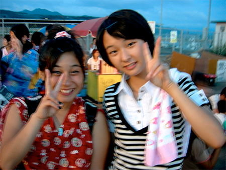

It’s the Little Things
Last December right before winter break, a couple of the 3rd-year girls at the junior high school I work at started writing little notes to me, which they would pass to me discretely after class and in the hallway. These notes soon evolved into short letters, and I was delighted to see the girls develop an interest in using English outside of their class assignments. It was a nice change of pace, considering I got to play the role of “big sister” and “friend” instead of my usual “teacher looking over my shoulder making me nervous as I struggle to make progress with this stupid grammar pattern” role. We exchanged letters about movies, Xmas traditions, favorite foods, plans for the holidays, etc. It was a breath of fresh air to say the least!
One day, a girl named Makoto noticed me passing a folded-up letter on brightly-colored construction paper to her classmate (I guess I’m not that good at being discreet, haha). Wide-eyed and looking a tad jealous, she demanded to know why her friend got special treatment. “She was the one who started writing to me. That was just my response. You should write to me too if you want a letter!” I said in defense. Okay, well Makoto’s English abilities aren’t that great, so it was actually more along the lines of me saying, “First she wrote,” while pointing at her friend and doing the writing gesture (life is a constant game of charades here), then pointing to myself, followed by “Write to me too, ok?” Haha. Anyway, Makoto got the point and nodded enthusiastically while giving me her signature cheery grin.
Makoto has the happiest smile I have ever seen on any human being in my entire life. When she grins her whole face lights up, and her eyes become upside down half moons, exactly the way a “smiley face” looks. I swear the smiley face was based on her (and not that grubby old towel that Forrest Gump used to wipe his face while he was running across the country)! This girl is a total sweetheart. Bumping into her in the hallway makes my days so much better…she practically radiates sunshine and gumdrops. I wish I could keep her in my pocket! I never really expected her to write to me, because judging from the way she struggles in class with writing assignments, I figured it might be difficult enough to take all the fun out being “secret” pen-pals.
Winter vacation came and went, and I was back in school in early January for the opening ceremony of the new semester and student council inductions. It was the dead of winter and freezing cold, yet the entire junior high school had to sit on the icy floor of the non-heated gymnasium for more than an hour. I couldn’t feel my fingers and I was incredibly unhappy about it. My discomfort was exacerbated by the fact that I had just recently returned from a two-week stint in Indonesia, where I had basked in lovely equatorial climate. Oh, the torture!
I was shuffling towards the exit after the ceremony–scowling with my hands shoved into my armpits–when Makoto spotted me. I wiped any remnants of the scowl off my face as she approached me, and I gave her a friendly smile wondering what the occasion was. Much to my surprise, she handed me a folded-up note. Then she gave me her signature grin and then scurried away to join her classmates who were filing out of the gym. I carefully unfolded the intricately folded piece of paper and was astonished to find a letter. A full-blown, lovely looking letter. “She must have worked on this the entire break!” I thought.
But what surprised me even more was the content of the letter. There was nothing about boy bands or favorite kinds of cake–it was just about me and her. And not only that, but the grammar was SO much better than anything I have EVER seen her write in class! I almost teared up:
Dear Mutia,
Hello Muthia
Muthia, I write to you for the first time. Now I feel a little nervous. It is my first experience to write a letter in English. It’s very difficult for me to do it. But I am excited because this experience is very precious.
You always greet me with a smile when I meet you at school. I feel very glad such a time. But I must finish this school soon. I feel sad to think of it.
You have taught me many things. The most impressive thing in that you gave us pretty seals*. To present opinions became great pleasure for me. Please teach me English until I finish my school.
I love you with a pretty smile.
From,
Makoto
(*She means stickers. This is how I bribe my students to volunteer and speak out in class.)
I couldn’t believe how well she had written her letter. She had poured her time and her heart into it. But most of all, I couldn’t believe that what she does for me every day, a.k.a. brighten up my day with her pretty smile, is the same thing I do for her.
I know I’m not here in Japan to be some kind of superwoman and miraculously turn every single child in this small seaside town into fluent English speakers with remarkable interest in cultures other than their own. And I don’t aim to accomplish that by any means (that would be a lost cause). But I do hope that I’m making some sort of difference by being here. Something. Anything.
It’s really nice to know that even the littlest things, like giving a student a cheery grin in the morning, does more than I ever thought possible. And that’s more than enough to keep me going.
-Mutia Adisoma
 Cutiepie Makoto (L) and her friend at my town’s summer festival.
{kind=link}